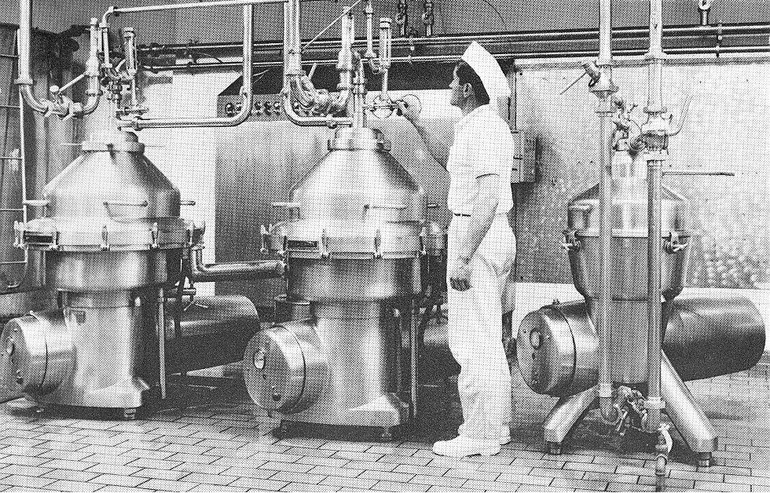
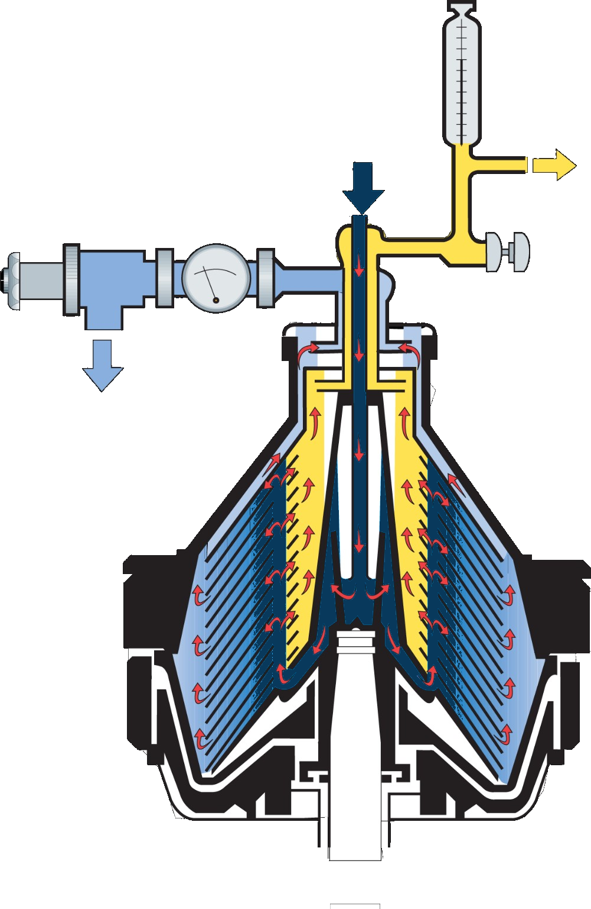
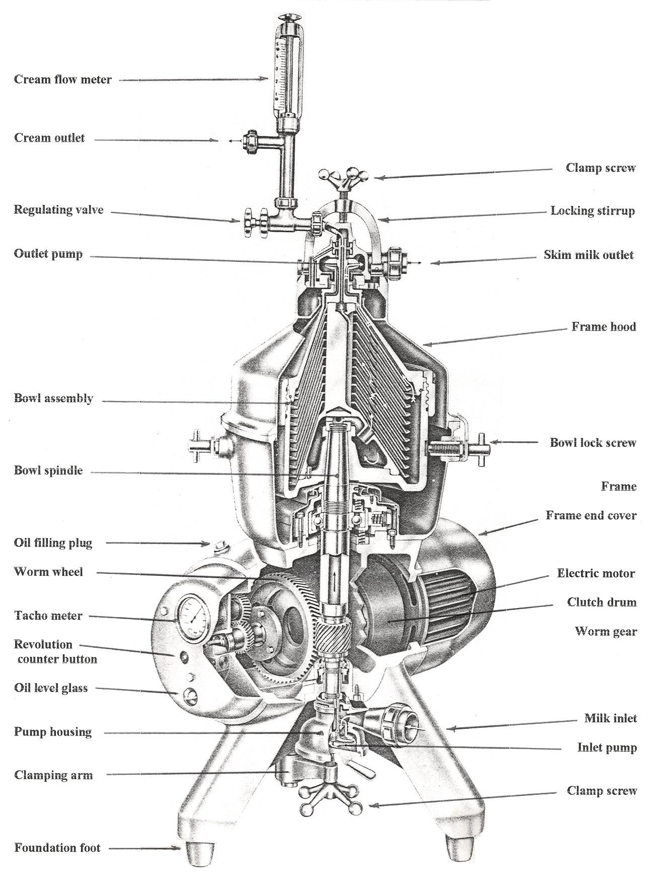
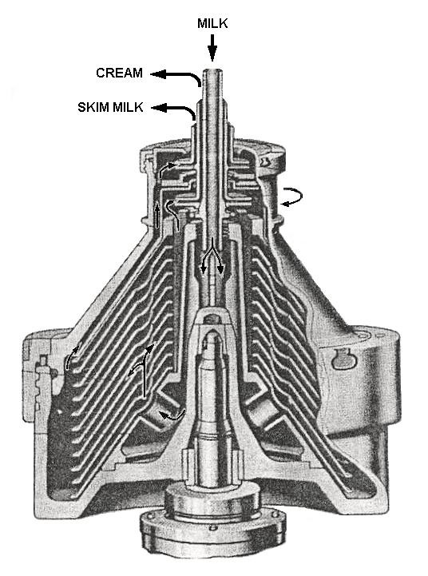

Cream Separator
A high-speed centrifugal machine that separates milk into a fat-rich cream phase and a low-fat skim-milk phase by exploiting their density difference.
Milk → Cream + Skim Milk
Milk enters the rotating separator bowl and is distributed through the disc stack. Under the centrifugal field, the denser skim-milk phase moves toward the bowl periphery while the lighter fat globules move toward the axis.
The simple idea
Density difference + centrifugal force + closely spaced discs = rapid cream separation.

01 · Working Principle — Step by Step
- Feed: Milk enters through the inlet and is directed into the rotating bowl.
- Acceleration: The bowl brings the milk to a high rotational speed, creating a strong centrifugal field.
- Distribution: A distributor spreads the milk uniformly toward the disc stack.
- Thin separation channels: Closely spaced conical discs divide the milk into many thin layers, greatly reducing the distance fat globules must travel.
- Phase movement: The denser skim-milk phase migrates outward toward the bowl wall, while the lighter fat globules migrate inward toward the axis.
- Coalescence: Fat globules reaching the cream side join the cream phase and move toward the cream outlet.
- Discharge: Cream and skim milk leave through separate outlet systems.
02 · See the Separation Inside the Bowl
The diagram below shows the flow through the disc stack. The blue central stream represents whole milk entering the bowl. The yellow region represents the lighter cream phase moving inward, while the light-blue region near the outside represents the heavier skim-milk phase moving outward.
Remember the direction
Cream → axis
Fat globules are less dense.
Skim milk → periphery
The continuous skim-milk phase is denser.

03 · The Disc Stack — The Heart of Separation
A separator bowl contains a stack of closely spaced conical discs. Instead of forcing fat globules to travel through one large open chamber, the disc stack creates a large number of narrow separation channels.
- Large effective separation area is created inside a compact bowl.
- Short migration distance helps fat globules reach the cream side quickly.
- Distribution holes feed milk into the disc channels.
- Disc spacing, cleanliness and correct assembly strongly influence performance.

04 · Main Components and Their Functions
Separator Bowl
The rotating bowl contains the actual separation chamber. It houses the disc stack and provides the centrifugal field.
Distributor
Receives incoming milk and distributes it uniformly into the separation zone and disc channels.
Disc Stack
A series of closely spaced conical discs that create many thin separation channels.
Distribution Holes
Openings that guide milk into the disc channels and help maintain uniform flow distribution.
Sediment Space
The outer region where heavier foreign particles and sediment can accumulate.
Spindle
The high-speed shaft supporting and rotating the bowl. It transfers rotational motion from the drive system.
Drive System
Motor, clutch and transmission components provide the rotational power required to operate the bowl.
Cream Outlet
Collects the lighter, fat-rich phase after it has migrated toward the axis.
Skim-Milk Outlet
Discharges the heavier continuous phase collected toward the bowl periphery.
Outlet / Paring System
Recovers rotating liquid and converts part of its kinetic energy into useful outlet pressure.

05 · Why Warm Separation Is Preferred
Lower viscosity
As milk becomes warmer, its viscosity decreases. Lower viscosity means less resistance to the movement of fat globules through the liquid and through the narrow disc channels.
Better fat-globule movement
With lower resistance, fat globules can migrate more readily toward the axis under the centrifugal field.
Why not simply keep increasing temperature?
Higher temperature is not automatically better. Separation must balance viscosity reduction with product quality and equipment/material limitations.
Practical operating condition
Warm separation is commonly carried out around the range used by the particular plant and separator design. The validated plant operating condition should always be followed.
06 · Stokes’ Law — Why Fat Globules Move
Stokes’ law helps explain the movement of small spherical particles or droplets through a viscous fluid. In a cream separator, it provides a useful theoretical way to understand why fat-globule size, density difference and milk viscosity affect separation.
Basic Stokes’ law
v = d²(ρp − ρf)g / 18μ
Here, v is the settling or migration velocity, d is globule diameter, ρp is globule density, ρf is fluid density, g is gravitational acceleration and μ is dynamic viscosity.
What the equation tells us
- Globule diameter: migration velocity varies with the square of diameter, so larger fat globules separate more readily.
- Density difference: a greater density difference produces faster migration.
- Viscosity: higher viscosity slows migration.
- Gravity → centrifugal field: in a separator, the gravitational term is replaced conceptually by the much stronger acceleration generated by rotation.
In a rotating separator
The effective radial acceleration is approximately a = ω²r. Therefore, the separator can produce a much stronger driving field than gravity, allowing separation to occur rapidly inside the bowl.
07 · Skimming Efficiency
A simple and useful way to judge separator performance is to determine how much of the incoming fat remains in the skim milk.
Fat loss with skim milk
Fat in skim milk = Skim-milk flow × Skim-milk fat / 100
Skimming efficiency
η = [(Fat entering separator − Fat leaving with skim milk) / Fat entering separator] × 100
where:
Fat entering = Milk flow × Milk fat / 100
Fat leaving with skim = Skim-milk flow × Skim-milk fat / 100
Example
Suppose milk flow is 10,000 kg/h with 4% fat, and skim milk flow is 9,000 kg/h with 0.05% fat.
Fat entering = 10,000 × 4 / 100 = 400 kg/h
Fat in skim = 9,000 × 0.05 / 100 = 4.5 kg/h
Fat recovered = 400 − 4.5 = 395.5 kg/h
η = (395.5 / 400) × 100 = 98.88%
How to interpret it
A higher skimming efficiency means a smaller fraction of the incoming fat is being lost with the skim milk. In practice, residual skim-milk fat is influenced by flow rate, temperature, bowl speed, disc condition, globule characteristics and air entrainment.
08 · Outlet Systems
Paring-disc outlet
A stationary paring device enters the rotating liquid layer. The rotating liquid flows through the paring-disc channels and part of its kinetic energy is converted into pressure for discharge.

Hermetic / centripetal outlet
The bowl remains filled with product and the separated phases are recovered through a closed outlet arrangement. This reduces product exposure to air and suits hygienic closed processing.

09 · Applications in Dairy Processing
Milk standardization
Cream and skim milk streams can be recombined in controlled proportions to obtain milk with the required fat level.
Cream production
The separator concentrates milk fat into the cream stream for further processing into butter, cream products and other dairy foods.
Skim-milk recovery
The skim-milk stream retains most of the non-fat milk constituents and can be directed to subsequent processing.
Clarification
Centrifugal equipment can also remove dense suspended particles, depending on the separator design and operating arrangement.
10 · Maintenance & Safe Operation
- Keep the disc stack clean and correctly assembled.
- Inspect gaskets, seals and other wear parts regularly.
- Maintain lubrication where the separator design requires it.
- Check spindle, bearings and drive components for abnormal vibration or wear.
- Keep the feed and outlet conditions within the equipment's operating limits.
- Never open, dismantle or adjust a separator while the bowl is rotating.
- Follow the equipment manufacturer's start-up, shutdown and cleaning procedure.
11 · Quick Revision
- Cream is the lighter, fat-rich phase.
- Skim milk is the denser continuous phase.
- Cream moves toward the axis.
- Skim milk moves toward the periphery.
- The disc stack creates many short separation paths.
- Lower viscosity improves globule movement.
- Stokes’ law explains the effect of globule size, density difference and viscosity.
- Residual skim-milk fat is an important performance indicator.
- Correct bowl speed, flow and temperature are essential for good separation.
- Safety and correct bowl assembly are critical because the separator operates at high speed.